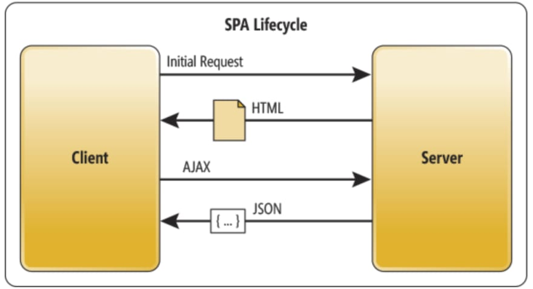

An SPA (Single-page application) is a web app implemention that loads only a single web document, and then updates the body content of that single document via JavaScript APIs such as XMLHttpRequest and Fetch when different content is to be shown. This therefore allows users to use websites without loading whole new pages from the server, which can result in performance gains and a more dynamic experience, with some tradeoff disadvantages such as SEO, more effort required to maintain state, implement navigation, and do meaningful performance monitoring.
Keuntungan Single Page Application
1.Lebih cepat dibandingkan dengan multi page application.
Perpindahan halaman tidak perlu melakukan request keseluruhan elemen halaman, tetapi hanya data tertentu saja yang belum di request saat inisiasi pertama kali. Ada konsep “virtual DOM” dimana perubahan pada DOM hanya terjadi pada elemen yang berubah.
2.Tidak perlu mensetup “server”.
SPA hanya memiliki satu buah index.html, beberapa css dan beberapa javascript. Sehingga kita cukup drag index.html terebut untuk menjalankan aplikasi SPA. Namun tentunnya ini sangat basic. Kita tetap membutuhkan server jika ingin mengoptimasi performa dari SPA itu sendiri.
3.Proses debug sangat mudah cukup dengan menggunakan browser (console).
Jika terjadi error cukup refresh pada browser maka akan tampil errornya di console tidak perlu melalui proses compile.
4.Satu kode untuk berbagai macam platform.
Dengan javascript kita dapat membuat website, desktop, android, iOS, Windows phone.
5. Prosess Caching lebih efektif karena memanfaatkan local storage pada browser.
Sebuah aplikasi dapat mengirim hanya 1 request, lalu responnya di simpan dalam local storage sehingga dapat digunakan kembali bahkan dalam keadaan offline sekalipun.
When to choose SPAs
following is a more detailed explanation of when to choose a Single Page Applications style of development for your web app.
Your application must expose a rich user interface with many features
SPAs can support rich client-side functionality that doesn't require reloading the page as users take actions or navigate between areas of the app. SPAs can load more quickly, fetching data in the background, and individual user actions are more responsive since full page reloads are rare. SPAs can support incremental updates, saving partially completed forms or documents without the user having to click a button to submit a form. SPAs can support rich client-side behaviors, such as drag-and-drop, much more readily than traditional applications. SPAs can be designed to run in a disconnected mode, making updates to a client-side model that are eventually synchronized back to the server once a connection is re-established. Choose a SPA-style application if your app's requirements include rich functionality that goes beyond what typical HTML forms offer.
Frequently, SPAs need to implement features that are built in to traditional web apps, such as displaying a meaningful URL in the address bar reflecting the current operation (and allowing users to bookmark or deep link to this URL to return to it). SPAs also should allow users to use the browser's back and forward buttons with results that won't surprise them.
Your team is familiar with JavaScript and/or TypeScript development
Writing SPAs requires familiarity with JavaScript and/or TypeScript and client-side programming techniques and libraries. Your team should be competent in writing modern JavaScript using a SPA framework like Angular.
-
References – SPA Frameworks
- Angular https://angular.io
- React https://reactjs.org/
- Comparison of JavaScript Frameworks https://jsreport.io/the-ultimate-guide-to-javascript-frameworks/